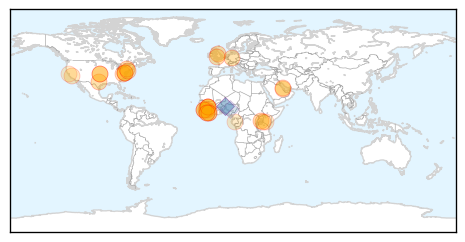
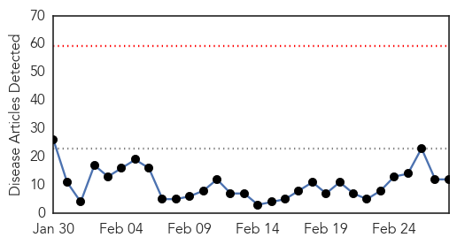
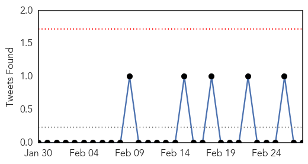
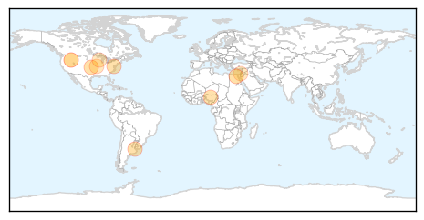
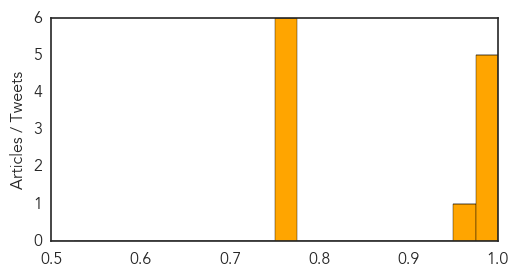

Ebola
30-Day Web Trend
0 alerts, 0 warnings

30-Day Twitter Trend
5 alerts, 4 warnings

Article Locations
Article Confidences

Top Articles:
- 0.999
- Ebola ebbs but aid agencies warn against complacency
- 0.999
- Human trials begin of US-made Ebola drug ZMapp
- 0.999
- Ebola outbreak: Disease ebbs in West Africa but aid agencies warn against complacency
- 0.998
- Ebola outbreak: Sierra Leone vice-president quarantined
- 0.996
- Ebola Victim Returns to Liberia, Aids Research - WRCBtv.com
- 0.995
- Decision on Ebola mass vaccination in August at earliest
- 0.991
- Thoughts turn to recovery as Ebola ebbs
- 0.990
- Shropshire Ebola doctor delighted with Sierra Leone progress « Shropshire Star
- 0.986
- Haunting memories of nurse's Ebola stint
- 0.983
- presidential commission
- 0.974
- US to begin clinical trial of Ebola experimental drug ZMapp in Liberia
- 0.973
- Obama, Liberian President Sirleaf discuss Ebola recovery
- 0.973
- Early Warning for Ebola: Strengthening Africa's Capacity to Anticipate Risk of Outbreaks
- 0.973
- Sierra Leone divided on reinstated Ebola measures
- 0.972
- West Aussies join ‘Florence Nightingale’ of Ebola crisis
- 0.970
- U.S. Ebola survivor Dr. Craig Spencer gives his side of the stor - WLTZ 38
- 0.964
- US and Liberia begin clinical trial of Ebola experimental drug ZMapp
- 0.964
- US and Liberia begin clinical trial of Ebola experimental drug ZMapp
- 0.932
- US military ends Ebola mission in Liberia — Nation — Bangor Daily News — BDN Maine
- 0.910
- Gulf Daily News Local News Newlyweds' travel ban agony
- 0.908
- Obama, Liberian President discuss Ebola recovery
- 0.901
- Newlyweds face ebola travel ban agony
- 0.888
- US Military Closes Ebola Mission in Liberia as the Epidemic Nears End
- 0.888
- UPDATED: Ebola Response in Clarendon
- 0.847
- Liberia leader hails Obama's 'extraordinary' Ebola efforts. Politics. Tengrinews.kz
- 0.824
- Panasonic Donates Solar Lanterns to UNDP for Ebola Relief Efforts
- 0.778
- Human Antibodies can Neutralize the Marburg Virus, a Close Cousin to Ebola Virus
- 0.653
- Spotlight on Ebola, post-2015 development agenda at ACP health ministers meeting
- 0.633
- African church-based health experts want more recognition from governments
- 0.609
- Agriculture Expansion In Tanzania May Increase Plague Risk
- 0.604
- Liberia Says “Thank You” by Nancy LeTourneau
Top Tweets:
- 0.985
- RT: AfricaAgainstEbola Grâce à votre geste nous repousserons le virus Ebola hors de l’Afrique. Pour contribuer les... http://t.…
- 0.815
- Regional Spread of Ebola Virus West Africa 2014 http://t.co/mKSAASUFn2
- 0.745
- For Africa to overcome the Ebola epidemic we as Africans and friends of Africa need to fight this disease together.AfricaAgainstEbola
- 0.687
- [INDEPENDENT] Ebola outbreak: Disease ebbs in West Africa as aid agencies warn against complacency http://t.co/fWuE2c4hrd EBOLANEWS
- 0.538
- Children's Hospital of Philadelphia Hosts Ebola Education Workshop - CBS Local http://t.co/Bw8iWK806j ebola EVD
Influenza
30-Day Web Trend
0 alerts, 0 warnings

30-Day Twitter Trend
0 alerts, 0 warnings

Article Locations
Article Confidences
Top Articles:
- 0.998
- Watch out for nasty global flu surprises, WHO warns
- 0.996
- Karen Cassidy: It’s not too late to get your flu vaccination
- 0.993
- WHO: World Remains Volatile Despite Influenza Breakthroughs
- 0.993
- WHO: World Remains Volatile Despite Influenza Breakthroughs
- 0.993
- WHO: World Remains Volatile Despite Influenza Breakthroughs
- 0.967
- Bird Flu: Are you still eating chicken?
- 0.751
- February 27, 2015 Archives
- 0.751
- February 27, 2015 Archives
- 0.751
- February 27, 2015 Archives
- 0.751
- February 27, 2015 Archives
- 0.751
- February 27, 2015 Archives
- 0.751
- February 27, 2015 Archives
Top Tweets:
-
No tweets found for Feb 28, 2015